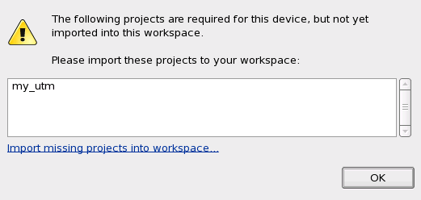

Changing the device with the Change Device button
Your workspace can contain one or more devices but only one device can be the active device at a time. Changing the device means that another device will be activated.
Before you begin
Make sure that the device you want to activate exists.
Procedure
Results
After activating the selected device, the system checks if all the referenced projects of the device project exist in the workspace. If not, the Warning window appears to inform the users, that the required projects should be imported. You can click Import missing projects into workspace to import the project.

In the Project Explorer view, the activated device is tagged with the text "(current device)".
Functional changes
- Introduced before SmarTest 6.3.2
- SmarTest 6.5.2: Changing the device is done in the Change Device Wizard.